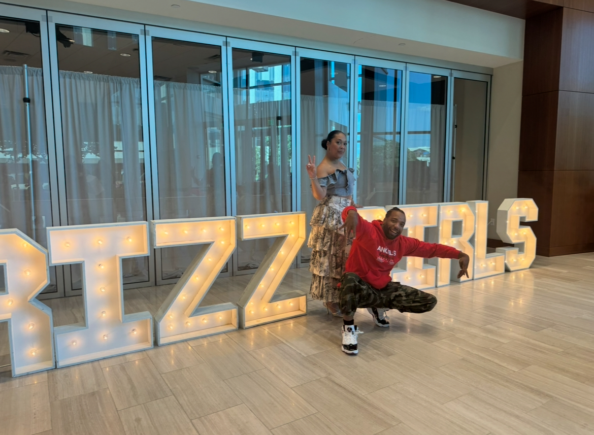

Creative Direction · Choreography · Education
Movement. Story. Impact.
Selected Work
Projects that move culture.

About Calan
Directing movement.
Creating culture.
Calan Bryant is a creative director, choreographer, dancer, and educator whose work lives at the intersection of artistry, storytelling, and cultural impact. His experience spans film, television, touring, professional sports, education, and live entertainment.
Discover his story ↗10+Years of experience
50+Masterclasses taught
NBAProfessional sports credits
TV + FILMNational entertainment work
Selected credits
NETFLIX
MEMPHIS GRIZZLIES
JAGGED EDGE
DANITY KANE
NBA
THE POCKET
Services
Built for stage, screen, and live experience.
01Creative Direction↗ 02Choreography↗ 03Artist Development↗ 04Television & Film↗ 05Workshops & Masterclasses↗ 06Consulting↗
Creative practice
Movement with intention.
The Pocket Dance Conference
Building the next generation.
An immersive training experience designed to develop versatile artists, confident performers, and future leaders through education, mentorship, performance, and community.
Explore The Pocket ↗
“Calan brings excellence, creativity, and purpose into every room he walks into.” Creative Partner